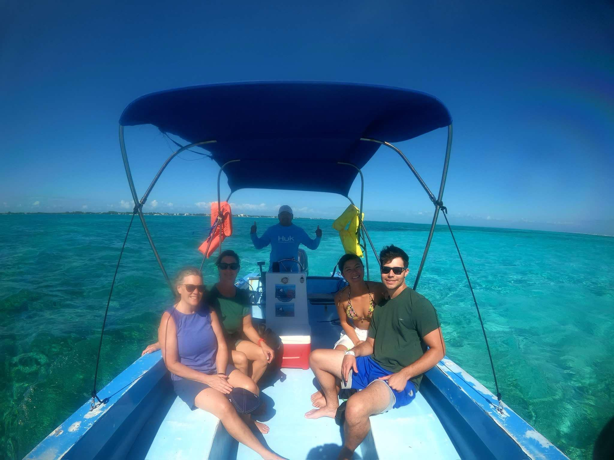
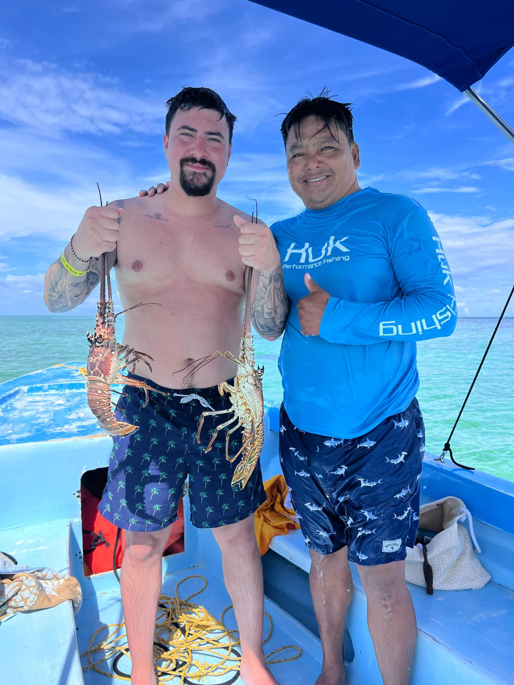
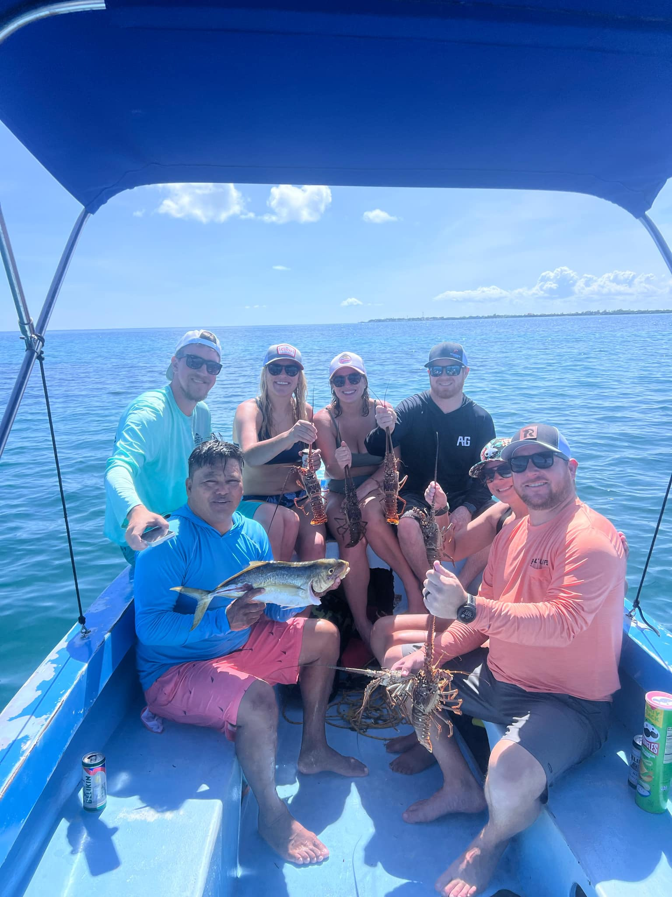

Caye Caulker Adventures With Vic!
Explore the Meso American Barrier Reef with us
Caye Caulker!
La isla Cariñosa
Just a 50 minute ride on a puddle jumper or a 10 minute flight from the airport sits Caye Caulker. A 5-mile long limestone coral island home to roughly 4,500 residents. It's people nice and welcoming to everyone who visits. With many activities and entertainment it's never a dull day on this beautiful island. With it's pristine waters and beautiful corals, Caye Caulker is a prime destination for fishing and snorkeling.

About
Who we are and what we do



Adventures with vic is a tour company that offers daily trips to the Holchan or Caye Cualker marine reserve. We are a family owned company commited to